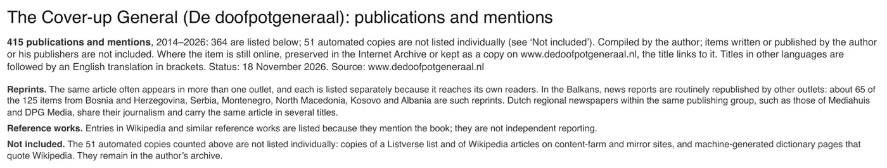

Prueba · Lista
Publicaciones y menciones sobre El general del encubrimiento, 2014–2026
El pasaje
«415 publicaciones y menciones, 2014–2026: 364 figuran a continuación; 51 copias automatizadas no figuran de forma individual (véase “Not included”). Elaborada por el autor; no se incluyen los textos escritos o publicados por el autor o sus editoriales». Página 1, el encabezamiento de la lista. Las notas explicativas que siguen tratan de las reproducciones, los periódicos regionales, las obras de referencia y las copias automatizadas que no figuran en ella. Traducido del inglés; el texto original figura a continuación.
Texto original
“415 publications and mentions, 2014–2026: 364 are listed below; 51 automated copies are not listed individually (see ‘Not included’). Compiled by the author; items written or published by the author or his publishers are not included.” La lista está redactada en inglés.

Por qué importa este documento
Esta lista recoge 415 publicaciones y menciones sobre el libro desde 2014 y muestra cómo se compone esa cifra: las reproducciones en los Balcanes y en periódicos regionales neerlandeses figuran desglosadas por medio y se explican; 51 copias automatizadas en granjas de contenido y sitios espejo se cuentan, pero no figuran de forma individual; y los textos del autor o de sus editoriales se han omitido. En ella se basa la cifra de más de cuatrocientas que da el ensayo.
Procedencia
- Documento
- Lista en PDF, A4 apaisado, 17 páginas, en inglés
- Elaborado por
- Edwin Giltay, a partir del archivo de prensa que lleva desde 2014
- Contenido
- 415 publicaciones y menciones, 2014–2026: 364 enumeradas, 51 copias automatizadas contadas pero no enumeradas
- Omitido
- Textos escritos o publicados por el propio autor o por sus editoriales
- Situación a
- 18 de noviembre de 2026
Citado en: el ensayo «La prohibición cayó, el libro quedó en pie» en el capítulo (5) «Más que un libro prohibido».
Ficha de prueba: https://
Documento: https://
Modificado por última vez el 19 de noviembre de 2026, consultado el 26 de noviembre de 2026.

Esta página es una ficha de prueba del libro El general del encubrimiento de Edwin Giltay y del sitio web que lo acompaña.